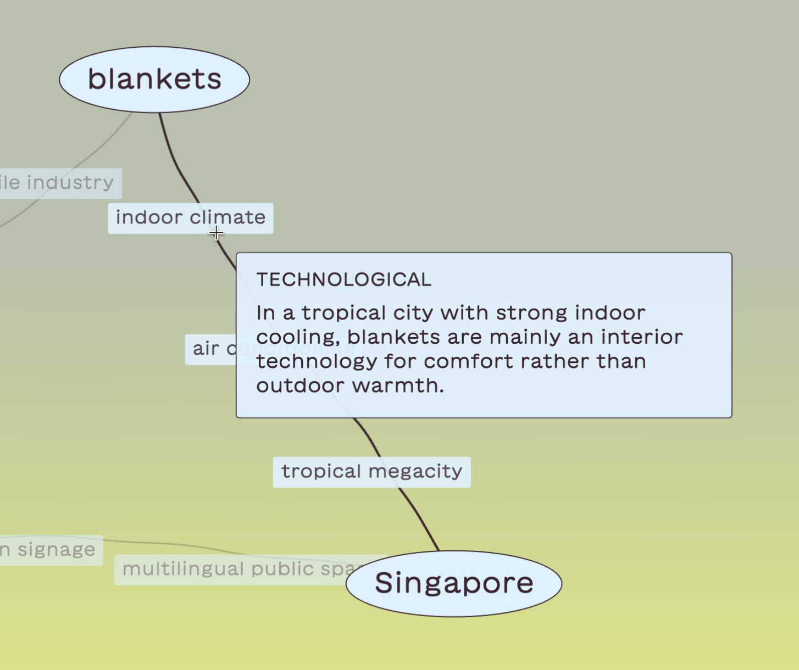
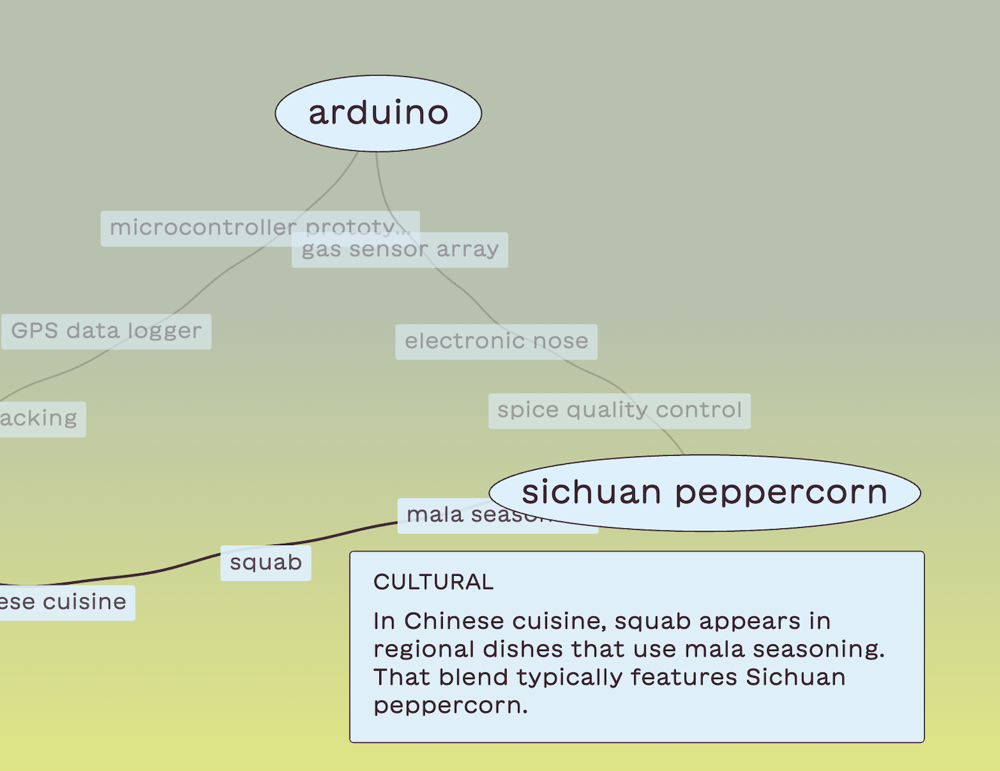
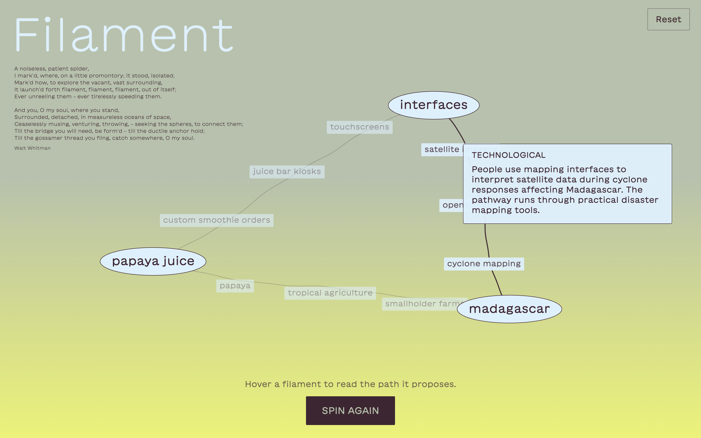
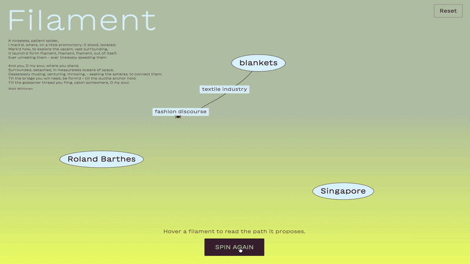

Filament
Filament takes inspiration from Walt Whitman’s A Noiseless Patient Spider, especially the image of a
spider sending filaments out into empty space in search of connection. Users place disconnected words or ideas
onto a blank canvas, and an LLM API generates associative paths between them. These paths appear as animated
threads,
with intermediate concepts placed along each connection.
interactive experiences,
generative design,
creative coding
2026
WATCH VIDEO→
PROCESS: FROM CLASSIFICATION TO CONNECTION
I initially started by thinking about ways of organizing different objects or ideas through classification,
but I became more interested in what happens when you place two unrelated things next to each other and ask:
how could these possibly be connected?
That shifted the project away from categorizing things and toward building relationships between them. I
wanted the user to begin with a completely blank space, place a few words wherever they wanted, and then
introduce a system that tries to bridge the gaps between them.
I was looking for a metaphor for that process and came across Walt Whitman’s A Noiseless Patient
Spider. The poem describes a spider standing alone and continuously throwing filaments outward,
“seeking the spheres to connect them.” That image felt very close to what I was imagining: isolated points
sitting in an empty space, with something repeatedly attempting to make contact between them.

THE AI AS SPIDER
From there, an LLM or ‘AI’ became the spider. The user provides the points, and the AI searches for possible
routes between them. I wanted it to show the steps
in between, because those intermediate concepts reveal how the association is being constructed.
For example:
rice → agriculture → seasonal cycles → lunar calendar → moon
The path is almost as important as the endpoints.
I also wanted the system to be able to SPIN AGAIN and produce a completely different network from the same
words. That became important because I didn’t want the visualization to suggest that the AI had uncovered
some hidden, correct relationship. The same concepts can support many different readings.

DESCRIPTION
Filament is an interactive web experiment inspired by Walt Whitman’s A Noiseless Patient Spider.
Users click into an empty canvas and place disconnected words, objects, people, or ideas anywhere in the
space.
Once several nodes are present, AI generates possible associative paths between them. Each path contains
intermediate concepts and appears as an animated curved filament. A small spider travels along the line as
it is drawn, making the act of connection visible.
The resulting web grows from both user input and machine interpretation. Users can hover over a filament to
see a short explanation of the association, or ask the system to spin again and generate another
interpretation.


REFLECTIONS
What interested me most was how quickly an association can start to feel legitimate once it has a visual
structure.
If AI simply outputs a sentence saying that rice and the moon are connected, I might question it. But once
that relationship is drawn as a continuous path, with intermediate concepts linking one step to another, it
begins to feel coherent.
That made me more interested in the interface than in whether the AI’s associations were clever. The
visualization itself gives the connection weight.
The spider metaphor also helped me think of association as an active process. The spider sends something
outward, sees what it reaches, and continues building from there. Filament
works similarly: the network is generated through repeated attempts at connection.
The project also became one of my first clear experiments with a systems-based approach. I was designing a set
of conditions:
user places concepts → AI interprets them → intermediate ideas are generated → relationships become spatial
→ the user reads the resulting network
The final image is never predetermined.
The question I left the experiment with was:
When does making a relationship perceptible become manufacturing a relationship?
That question feels useful beyond AI as well. Interfaces, diagrams, maps, and visualizations all have the
ability to make certain relationships feel more real simply by giving them form.
functionditi@gmail.com
© Aditi Neti 2026